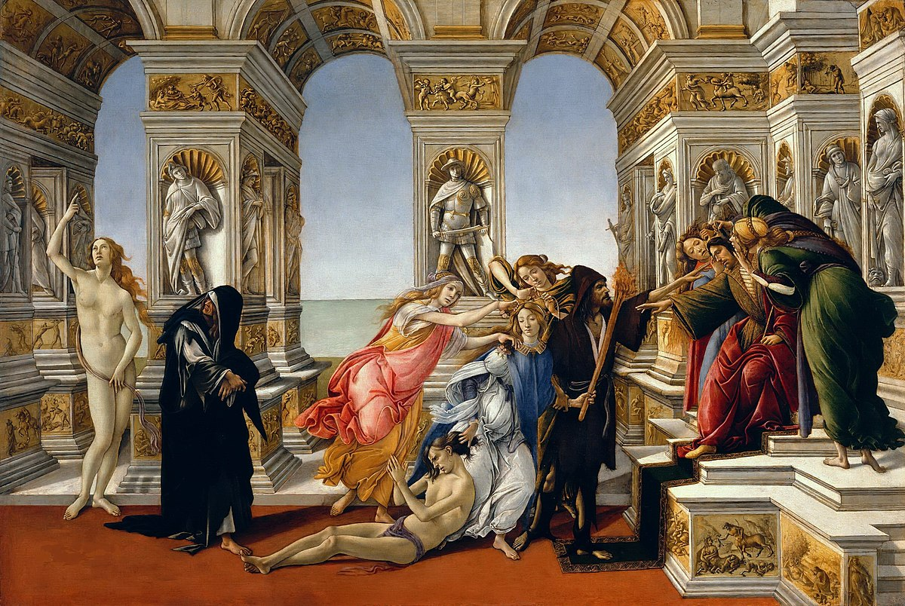
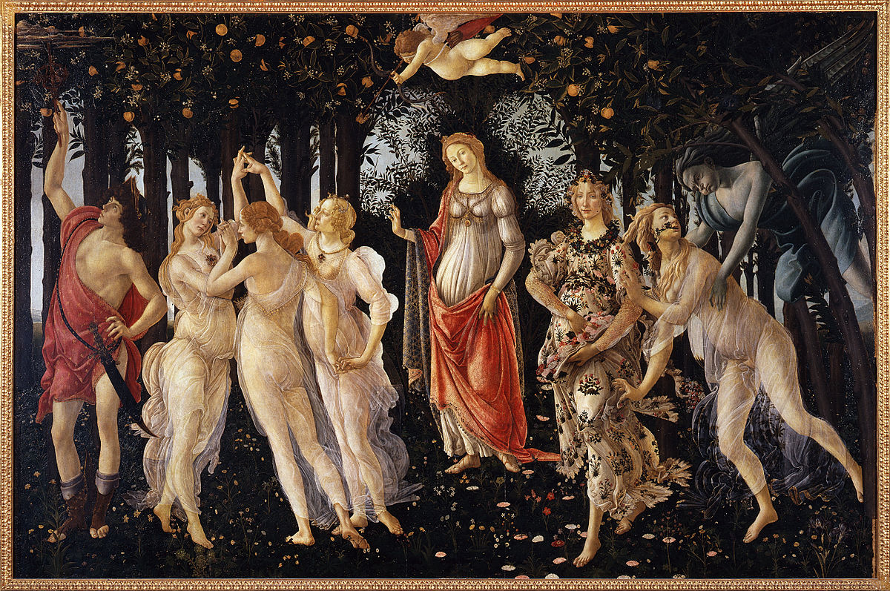
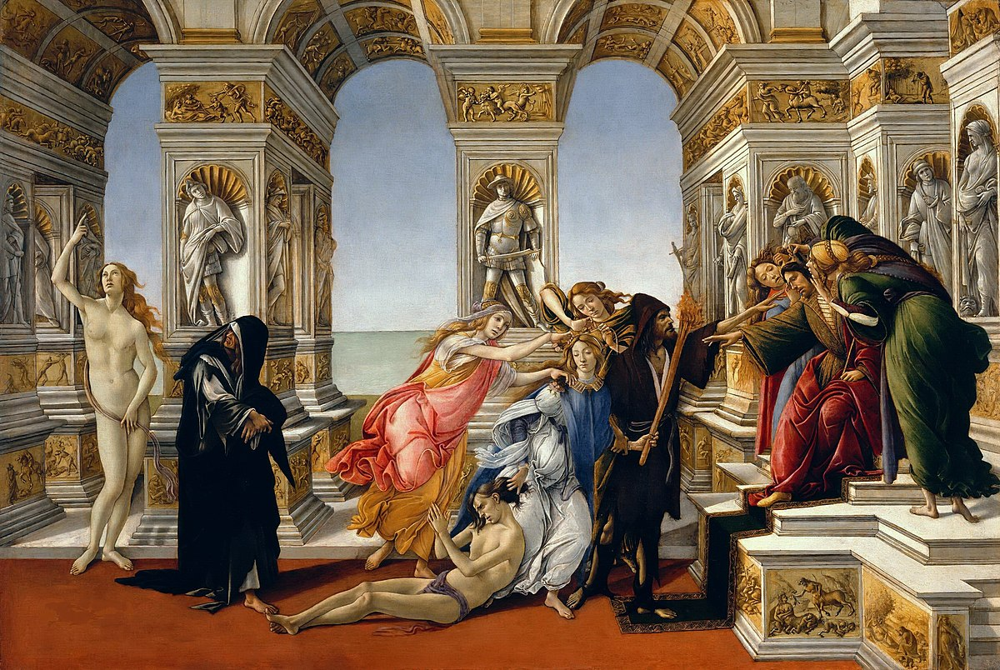
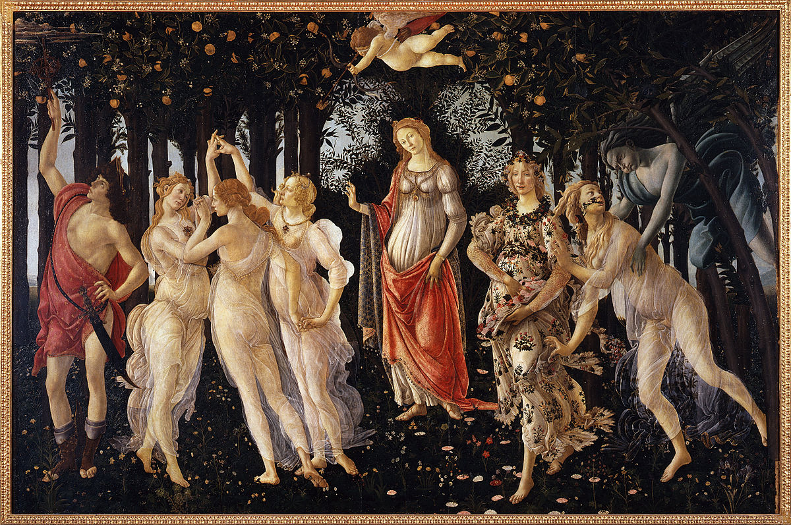

Sandro Botticelli was an Italian Renaissance painter born in 1445 in Florence, Italy. He is considered one of the most
important and talented artists of the Renaissance period and one of the most important representatives of Florentine art
of the time.
Botticelli began his career as an apprentice to an important Florentine painter named Fra Filippo Lippi, and later
worked for the court of the Medici family, which was one of the most powerful and wealthy in Florence at the time.

Botticelli is known for his works that combine classical tradition with a Renaissance style of his own, and for his ability to create works of art with great sensitivity and emotion. Some of his most famous works include The Spring, The Birth of Venus and The Calumny of Apelles.
In addition to his work as a painter, Botticelli also worked as a designer of sculptures and panels, and was involved in projects for the decoration of important churches and palaces in Florence.
 



TRY SLIDING THE IMAGE
- Personal life: Very little is known about Botticelli's personal life, and many aspects of his life, including his
training as an artist, are the subject of debate among art historians. However, it is known that he was a devout man and
was deeply influenced by philosophy and religion.
- Relationship with the Medici court : Botticelli maintained a close relationship with the Medici court throughout his
life, and his work for this family had a significant impact on his development as an artist. He worked on a number of
important projects for the court, including the decoration of the Casa della Primavera, a palace belonging to the Medici
family in Florence.
- Influence of philosophy and religion: Philosophy and religion played an important role in Botticelli's life and work,
and many of his works reflect these interests. For example, The Spring is a work that combines pagan and Christian
themes, and has been interpreted as a reflection on the relationship between nature and spirituality.
- Influence on art: Botticelli's work has had a significant impact on art and culture over the centuries, and has been
studied and admired by artists of all ages. His elegant and refined style, and his ability to create works of art with
great sensitivity and emotion, make him one of the most important representatives of Renaissance art.
In conclusion, Sandro Botticelli is one of the most important and talented artists of the Renaissance period, and his
work continues to be a source of inspiration for many. His relationship with the Medici court, his influence of
philosophy and religion, and his ability to create works of art with great sensitivity and emotion make him one of the
most important representatives of Florentine art of the period.